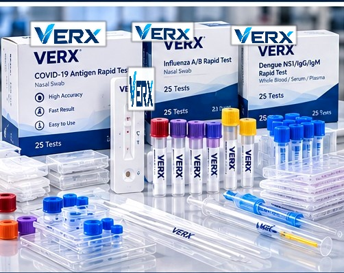
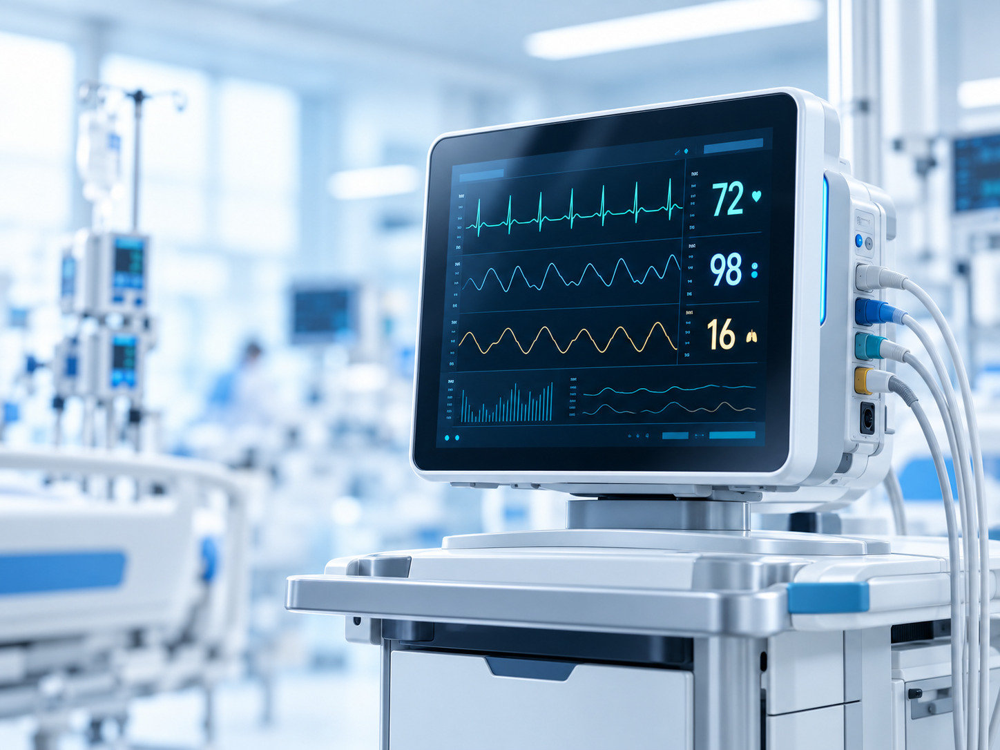

ISO 13485:2016
Where relevant, assess manufacturer quality-management certification against its validity, issuer and applicable scope.
Our approach emphasises appropriate product information, relevant documentation and awareness of destination-market regulatory requirements.
Request Documentation ↗
Medical product regulatory requirements vary. We aim to provide or coordinate relevant documentation where applicable, rather than relying on blanket claims.
Where relevant, assess manufacturer quality-management certification against its validity, issuer and applicable scope.
Review applicable declarations, certifications and market-specific product authorisations.
Consider relevant test reports and product performance information where available.
Request inspection, batch and quality-control documentation where appropriate to the product.
Where relevant, review equipment calibration and stated accuracy details.
Confirm applicable import, registration and market requirements for each product and jurisdiction.
ISO 13485 relates to quality-management systems; it does not certify each individual medical device. CE, UKCA, FDA or other approval claims must be substantiated for the exact product and destination. No certification is asserted here without current supporting documentation.
Share the product category, intended country of sale or use, and the documentation required by your procurement or compliance team.
Submit a Documentation Enquiry ↗